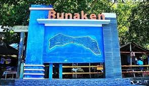
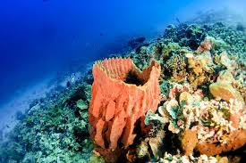

Overview Pulau Bunaken

Bunaken adalah taman laut yang terletak di Sulawesi Utara, Indonesia. Taman ini terletak di Segitiga Terumbu Karang yang menjadi habitat bagi 390 spesies terumbu karang dan juga berbagai spesies ikan, moluska, reptil, dan mamalia laut. Taman Nasional Bunaken merupakan perwakilan ekosistem laut Indonesia, meliputi padang rumput laut, terumbu karang, dan ekosistem pantai. Taman nasional ini didirikan pada tahun 1991 dan meliputi wilayah seluas 890.65 km². 97% dari taman nasional ini merupakan habitat laut, sementara 3% sisanya merupakan daratan, meliputi lima pulau: Bunaken, Manado Tua, Mantehage, Naen, dan Siladen.
Flora dan Fauna Pulau Bunaken

Taman Nasional Bunaken memiliki ekosistem terumbu karang yang sangat kaya. Terdapat sekitar 390 spesies terumbu karang di wilayah ini. Spesies alga yang dapat ditemui di Taman Nasional Bunaken adalah Caulerpa, Halimeda, dan Padina, sementara spesies rumput laut yang banyak ditemui adalah Thalassia hemprichii, Enhallus acoroides, dan Thalassaodendron ciliatum. Taman Nasional Bunaken juga memiliki berbagai spesies ikan, mamalia laut, reptil, burung, moluska dan mangrove. Sekitar 90 spesies ikan tinggal di perairan wilayah ini. Di daratan, pulau ini kaya akan Arecaceae, sagu, woka, silar dan kelapa. Selain itu, Taman Nasional Bunaken juga memiliki spesies hewan yang tinggal di daratan, seperti rusa dan kuskus. Hutan mangrove di taman ini menjadi habitat bagi kepiting, lobster, moluska, dan burung laut.
Activity Pulau Bunaken
Diving
Sebagai pusat segitiga terumbu karang dunia, Bunaken menyajikan pesona bawah laut yang luar biasa. Ribuan spesies ikan dan mamalia lain banyak mendiami dasar laut kawasan ini.
Menanam Mangrove
Kawasan konservasi laut memiliki ekosistem mangrove. Hutan bakau berperan untuk mencegah abrasi.
Mengenal Lamun
Tumbuhan yang sering dianggap sama dengan rumput laut ini mempunyai sejuta manfaat. Padang lamun menjadi habitat bagi berbagai jenis biota laut, seperti penyu dan dugong. Tumbuhan ini juga dianggap sebagai salah satu penyerap karbondioksida yang menjadi penyebab pemanasan global. Memahami lamun lebih jauh adalah salah satu aktivitas yang bisa dilakukan di Bunaken.
Melihat Langsung Mamalia Laut
Teluk Sulawesi menjadi lokasi mamalia laut (cetacea) seperti paus dan lumba-lumba mencari makan. Pengunjung dapat menyewa perahu nelayan yang akan mengantarkan ke tengah laut. Puluhan lumba-lumba setiap paginya terlihat menari-nari memenuhi perairan. Pemandangan ini akan membuat pengunjung tidak mau segera pergi dari Bunaken.